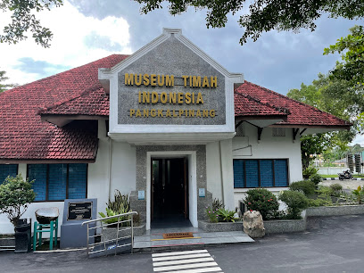

Profil Museum Timah Indonesia
Museum Timah Indonesia didirikan untuk melestarikan dan menampilkan warisan industri pertambangan timah yang telah menjadi bagian penting dari sejarah Indonesia selama berabad-abad.
Berlokasi di jantung wilayah pertambangan timah, museum ini menampilkan koleksi lengkap mulai dari peralatan penambangan tradisional hingga modern, kerajinan timah bersejarah, dokumentasi industri, dan berbagai artefak yang menceritakan perjalanan panjang industri timah di Indonesia.
Dengan lebih dari 1.000 koleksi, Museum Timah Indonesia menjadi pusat edukasi dan penelitian tentang industri timah, sekaligus tempat wisata yang menarik bagi pengunjung dari berbagai kalangan.
Visi kami adalah menjadi museum terdepan dalam pelestarian warisan industri timah Indonesia dan menjadi jembatan pengetahuan antara generasi masa lalu, sekarang, dan yang akan datang.